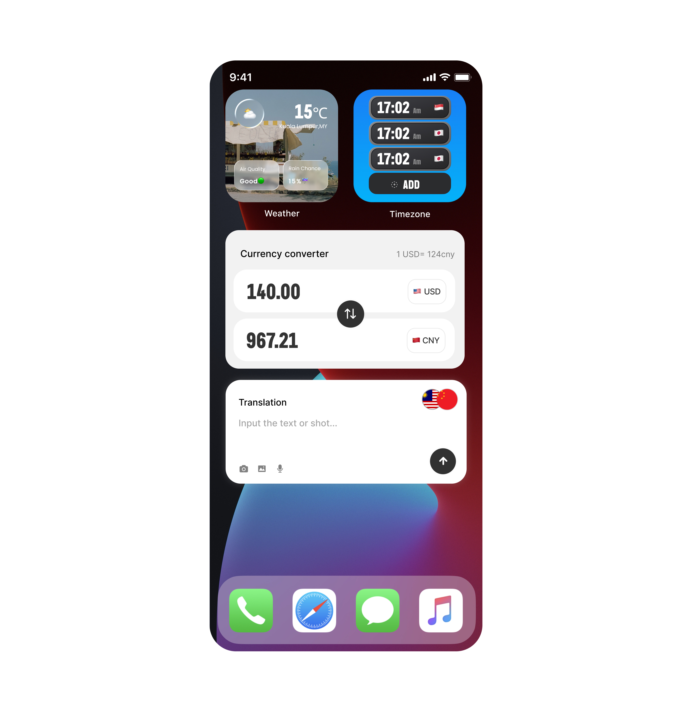

×
vivi._
@vvstudioco
Hi, I am a product designer.
vvstudio® is a design studio for those who build with care.
Design process?
Tell me about Nomad Kit
How to contact you
Nox Ventures
Strategic co-founder for crypto teams
2025.2
Startline
Your first 5K starts here
▶ Video Playing (Loop)
2025.10
Surge
First AI agent launchpad on sui
2025.8-2026
Unibee
opensource payment saas
2024.11
